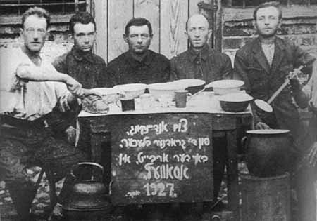
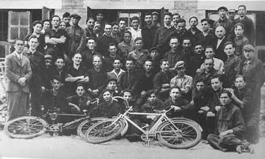
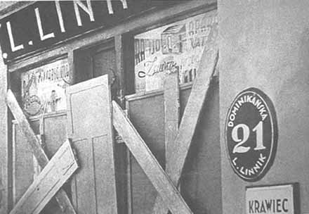
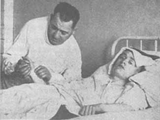
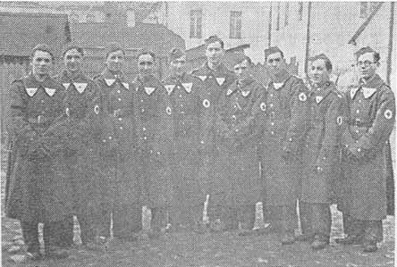

|
||||||||||||||
BETWEEN THE WORLD WARS - 1Demographic Changes Under the terms of the Treaty of Riga (March 18, 1921), Poland received a large part of the territory that was claimed by both the Ukraine and Byelorussia. Poland’s eastern boundary was demarcated more or less along the Russo-Polish border that had been set following the second partition of Poland in 1793. The Poles viewed this as a compromise solution between their aspirations for “the historic borders” and what they considered their ethnic territory. Within these “compromise borders” the proportion of non-Poles within the population was estimated at about 40 percent. In the eastern part of the country, the Byelorussians and the Ukrainians constituted the majority in the rural areas, but in the big cities the Poles and the Jews made up the majority. More than a million Germans resided primarily in the southwest of the country, in regions that in the past had been annexed to Prussia, while the Jews constituted slightly more than 10 percent of the population. For reasons connected with the “geography of elections,” the Polish authorities enlarged the territory of Grodno by annexing to it suburbs and nearby villages. One result of this move was to reduce the relative proportion of the Jews in Greater Grodno. This demographic trend persisted through the 1920s and the 1930s, due to a combination of factors. Grodno, like most of the medium-sized cities and towns in Poland at this time, was feeling the consequences of rapid urbanization, a process that was most blatant among the Jews; many young people from Grodno sought their future in the larger towns and big cities. The situation was compounded by the Jews’ low rate of natural increase: 8.9 percent, as compared with 18.5 percent among the general population. Thus, the proportion of the Jews in Grodno’s population declined appreciably. Within ten years, between the censuses of 1921 and 1931, the proportion of the city’s Jews dwindled from 54 percent to 42.6 percent. The central square on market day The standard of living among Grodno’s Jews declined continuously in the inter-war period. Most made their livings as shopkeepers, peddlers and artisans; only a small group, consisting of industrialists, large merchants, and some employed in the liberal professions, enjoyed economic prosperity of one degree or another. The annexation of the Grodno region to Poland at the end of World War I and the loss of the huge Russian market meant that the population was dependent on the very limited internal Polish market. Since the Poles did not introduce agrarian reform, peasants with small plots ran economically independent households and did not need goods or services provided by artisans. Moreover, the Poles deprived Grodno of its status as the administrative center of a broad district; the new center was Bialystok, which was far from the border with Lithuania and from the Byelo-russian villages and closer to the center of Poland, a development that played a role in the deterioration of the economic situation in Grodno. These and other developments seriously affected the livelihood of the population in general and of the Jews in particular. The Polish authorities also adopted a consistent policy of removing the Jews from their economic positions. Moreover, the government gave Poles in the Grodno region, as throughout the eastern border area, land for settlement; loans and housing assistance; various concessions in commerce, industry, and small industry; positions in the government and the army; tax exemptions; and other benefits that were not given to Jews. At the same time, the taxation and levies system, together with the government’s nationalization and monopolistic practices, adversely affected the Jews, who lost jobs in the government-run railway, telegraph, and postal services and suffered discrimination in the private sector as well. The Jews also suffered from the law-enforcement methods. The officials involved were at best unsympathetic to them and many were outright Jew-haters. The police hounded Jewish shopkeepers, fining them for every violation – real or imagined – of the sanitation regulations. The well-known Mejlachowicz press  A group of Jewish tinsmiths The years of economic depression radicalized internal conflicts and heightened anti-Jewish discrimination. The right-wing parties and the Polish population competed in making up antisemitic slogans and in conjuring up extreme solutions for the “Jewish problem.” Only one party, the PPS (Polish Socialist Party), occasionally objected to the surging antisemitism, but to little effect. Commerce was the primary and major economic sector on which the government’s anti-Jewish policy was focused. Already on December 18, 1919, the Polish government prohibited the opening of shops on Sundays and on Christian holidays. Although this was not necessarily directed against the Jews, it most certainly caused a serious reduction in their incomes. Later, the general economic crisis was fertile ground for an economic boycott of the Jews. Local and national merchants’ associations launched a vigorous propaganda campaign against their Jewish colleagues under the slogan “Swoj do swego” (“let everyone turn ´ to his own people”). The drive received the blessing of the rightist OZN (United National Camp) government. Prime Minister Florian Slawoi-Skladkowski made clear his stand on the Jewish question on June 6, 1936, when he said, “No one in Poland must be harmed, as a fair landlord does not permit anyone to hurt people in the house; [however] an economic struggle – of course [“Owszem”]!” That last word was understood as the go-ahead to discriminate against the Jews by means of extreme economic measures. A highly inflammatory antisemitic propaganda campaign was launched. The press published defamatory articles and virulent anti-semitic caricatures; anti-Jewish graffiti and posters appeared on walls of buildings; Jew-baiting leaflets were distributed on the streets; protest vigils were held in front of Jewish businesses; and shops owned by non-Jews were marked, the latter in some cases against the owners’ will. The Poles introduced the term “Christian shop,” and, in the late 1930s, even carriage drivers bore the inscription “Christian carriages” on their caps. Jewish suppliers were also boycotted. The intensive boycott propaganda affected both the simple folk and the educated. Not a day passed without an article appearing about a meeting, a lecture, protest vigils, the distribution of antisemitic handbills, and so forth. For example, the “Swoj do swego” group ´ organized a “solidarity month” and a “Polish merchant’s day”; merchants from Grodno and the surrounding area sent a delegation to Warsaw to demand that no Jews be given tobacco concessions; the nationalist-antisemitic “Narodowa Demokracja” (National Democracy) party, known as Endecja, held a mass rally and set up a special department to work for the economic dispossession of the Jews. The department circulated propaganda leaflets that played on the emotions of the Christians, with assertions such as “There is no Poland without Polish commerce”; “Pole, defend Polish commerce”; “Poland without Jews is a strong Poland”; “Buying from Jews enriches them”; and “Buy from Christians in order to provide bread and jobs to the unemployed and to strengthen the state.” The merchants’ association, unwilling to stop at mere words, resorted to threats by blacklisting those who maintained commercial ties with Jews. These aggressive economic measures were partially successful; quite a few Jewish merchants lost their clients and were forced to close. Nevertheless, some Poles continued to buy from Jews for the simple reason that their prices were lower. State intervention led to the ouster of Jews from several economic branches in which the Jews of Grodno and the region held a prominent place, such as forest products and grains. The Jews’ diminishing share in commerce during the inter-war period was consistent and unremitting. But if, until the mid-1930s, it stemmed mainly from socioeconomic trends among the population, the last five years before the war saw a constant intensification of deliberate anti-Jewish policies and harsh propaganda. In 1932, 694 of Grodno’s 823 shops (84.3 percent) were still Jewish-owned. Five years later, although in absolute numbers there were more Jewish shops – 710 out of a total of 999 (most of the increase occurred in the food branch) – their relative proportion had declined to 71.1 percent. A few branches of commerce remained mainly in Jewish hands: soap, salted fish, glass, iron, and building materials. Industry. Polish industry also suffered a sharp recession between the wars, and here, too, the Jews, whether as industrialists or as workers, were particularly hard hit. The combination of the monopoly system, which was introduced in Poland at this time, and the nationalization of large factories was calamitous for the Jews. One of the most flagrant cases was the nationalization of the Shershevski tobacco factory, which, before World War I, had been the third largest in all of Russia; its total work force fell from 1,800 to 650, of whom only 280 were Jews. Some of the city’s Jewish industrialists were nevertheless able to maintain their position even in this period, continuing to do business with non-Jews. For example, the construction company of Nahum Freydovicz (cement-pipes factory and building-materials stores and depots) continued to execute large-scale projects, such as barracks and bridges, mainly for the army. Jewish factory workers were also victimized. As a rule, Jews were not hired by state-owned factories, or by those that had been transferred to the state in the monopolization process. Jews who were already working in these plants, in some cases for many years, were the first to be dismissed in every case of cutbacks. (Frequently they were sent on their way with the words “Go to Palestine!”) This was the situation in the matches, salt, and liquor industries. Even in those cases that they were not fired, Jewish workers found it difficult to compete with their non-Jewish colleagues: Many did not work on the Sabbath, and they always felt pressure that in order to keep their jobs they had to excel. Crafts and Small Industry. Under the circumstances described above, it is not surprising that many of Grodno’s Jews were compelled to earn a living as self-employed home-based workers, engaged primarily in crafts and small industry. However, here again, there were many difficulties. A law passed on June 27, 1927, obliged artisans to possess a “master craftsman” certificate as a condition for maintaining a workshop and employing apprentices. Yet only about 10 percent of Jewish craftsmen had such a document. In order to obtain a permit, it was necessary to pass a test conducted in Polish and pay a high fee. Nor should we overlook the examiners’ hostility toward Jewish candidates. The 1927 law applied also to pupils, who had to attend a vocational school for three years and then specialize for three more years under a “master craftsman.” However, there were few professional schools, and Jews were not easily accepted. Board of Directors of the Jewish "Folksbank", 1925  The "Nieman" bicycle factory Liberal Professions. Although many of Grodno’s Jews were educated, they were excluded from most of the relevant occupations, including the government bureaucracy. A good number therefore turned to the liberal professions, particularly medicine and law. However, the government took measures to counter this trend by introducing a numerus clausus system on the number of Jewish admissions to the faculties of law, medicine, pharmacology, and so forth. As a result, many young Jews went abroad to study. In the 1930s about half the physicians and lawyers in Grodno were Jews (some fifty physicians and forty lawyers, as well as a few engineers). The publications of the Endecja party called tirelessly for extreme measures to be taken in order to oust the Jews from public service and from the liberal professions. This demand was well received among many Polish intellectuals. Finally an “Aryan clause” was imposed on these professions, and the party published lists of physicians and lawyers and distributed leaflets and posters urging Poles not to solicit the services of Jewish practitioners. (“If you are sick, go only to a Christian physician!”; “Seek counsel only from a Chris-tian lawyer!”). In 1937, Endek students stepped up their vigils in front of Jewish law firms and medical clinics. Banking. Before World War I there were six private banks in Grodno, all owned by Jews, as well as a Jewish savings fund and a low-interest fund for the indigent. These institutions played a crucial role in the Jews’ economic life. There was no business, commercial enterprise, or factory in Grodno that did not have contacts with Jewish bankers. Seventy-five Jews (and their families) earned their living from banking. By the 1930s, however, not one Jewish bank remained in the city, and there were only two loan and savings funds, which employed twenty-two Jews between them. The private banks were replaced by government banks – from which Jews were rigorously excluded. After the 1935 Pogrom  After the 1935 Pogrom  Pogrom victim Israel Berezowski (son of the synagogue choir master) on his deathbed  Young members of Betar undergoing military training Few Jews benefited from the unemployment law of July 17, 1924, or from statutory rights such as an annual vacation or a pension. In theory this social legislation was not necessarily directed against Jews, but, in practice, they overlaid a series of laws that directly affected the Jews, because the benefits were granted to factories and workshops that employed more than four workers and the Jews almost always owned smaller workshops. According to a partial estimate, one-third of Poland’s Jews became welfare and charity cases, one-third lived on the brink of poverty, and the income and living standards of the rest also declined to some degree. Home |
||||||||||||||